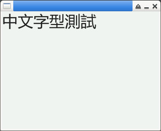

參考資訊：
https://docs.lvgl.io/master/
https://github.com/lvgl/lvgl
https://docs.lvgl.io/master/details/integration/driver/sdl.html
main.c
#include <stdio.h>
#include <stdlib.h>
#include <unistd.h>
#include <SDL2/SDL.h>
#include <lvgl.h>
static lv_display_t *disp = NULL;
int main(int argc, char *argv[])
{
lv_init();
disp = lv_sdl_window_create(320, 240);
lv_font_t *font = lv_freetype_font_create("font.ttf", LV_FREETYPE_FONT_RENDER_MODE_BITMAP, 32, LV_FREETYPE_FONT_STYLE_BOLD);
lv_style_t style;
lv_style_init(&style);
lv_style_set_text_font(&style, font);
lv_obj_t *label = lv_label_create(lv_screen_active());
lv_obj_add_style(label, &style, 0);
lv_label_set_text(label, "中文字型測試");
lv_timer_handler();
SDL_Delay(3000);
return 0;
}
編譯、執行
$ gcc main.c -o main -I/usr/include/SDL -I/usr/local/include/lvgl/src -llvgl -lfreetype -lSDL2 -DLV_CONF_SKIP -DLV_USE_FREETYPE -DLV_USE_SDL $ ./main
